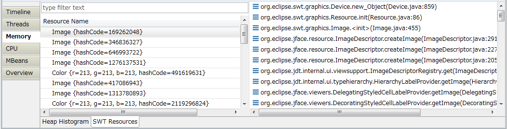

Identifying SWT resource leak
When your Java application is based on SWT, you may want to check if there are any operating system
resource leak that can be caused by missing invocation of org.eclipse.swt.graphics.Resource.dispose().
To identify SWT resource leak:
-
Open SWT Resources page that is available in case of monitoring SWT-based Java application.
On the left hand side, you can see SWT resources that have been allocated after connecting to JVM.
When you select one of SWT resources, you can see its stack trace on the right hand side,
so that you can identify the source code in which the SWT resource was allocated.

-
Press Clear button
[
 ] at the local toolbar to clear the
currently shown resources.
] at the local toolbar to clear the
currently shown resources.
Node: Clear button doesn't dispose SWT resources in JVM, but just makes the
currently shown resources invisible.
-
Do some operations in which you suspect resource leak. Typically, it would be a set of operations
that finally go back to the initial state of operations (e.g. opening a view and closing a view).
You will see the resources that are newly allocated but not displosed.